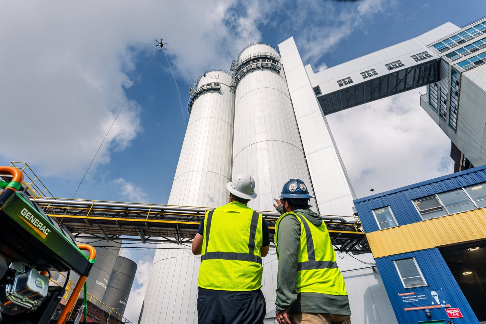
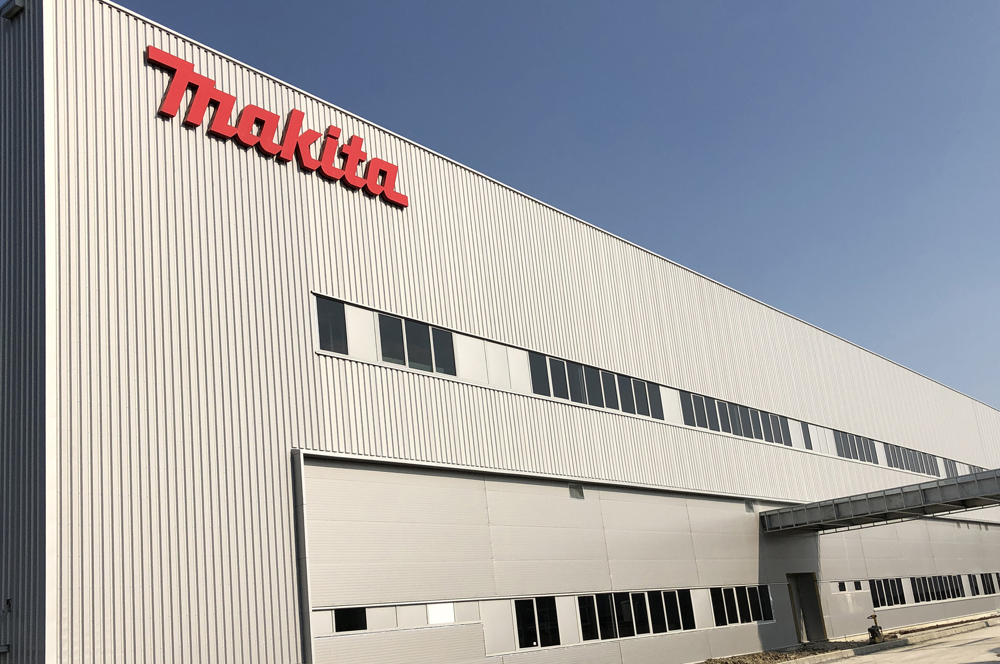

Site and HSE survey: access, hazards, operations and runoff.

SERVICES / INDUSTRIAL
Drone cleaning for industrial facilities
Altitude Robotics cleans tanks, silos, cladding and elevated external structures while removing the cleaner from the working-at-height exposure.
Reference image · Lucid Bots · Video to be supplied
The incumbent
Scaffold, MEWPs and rope access put the access problem before the cleaning problem.
For plant and HSE teams, elevated cleaning adds working-at-height exposure, access equipment and operating-zone coordination before the surface is touched.
The Altitude approach
Bring the cleaning equipment to the surface. Keep the team on the ground.
0 cleaners at height
Suitable external surfaces are cleaned by drone while the operating crew remains at ground level.
Less access equipment
Reduce dependence on scaffold, boom lifts and repeated elevated setup.
Planned around operations
Work zones are phased around production, deliveries and HSE controls.
Side-by-side
| Metric | Scaffold / MEWP / rope access | Altitude Robotics |
|---|---|---|
| Access method | Scaffold / MEWP / rope access / manual pressure wash | Ground-operated cleaning drone |
| Cost per m² | Access equipment + labour priced into the job | Site-priced after survey; access equipment reduced on suitable surfaces |
| Mobilisation | Scaffold, lift or rope system positioned before cleaning | Ground system + exclusion zone; no elevated cleaning platform |
| Operational downtime | Equipment can occupy yards, lanes or loading areas | Work is phased around production and logistics zones |
| People at height | Personnel work from elevated access | 0 for areas cleaned by drone |
We only publish operating numbers we can validate. Cost per m², site duration and weather limits are confirmed in the quotation after survey.
Typical assets


SCOPE
What is included
- Surfaces: tank exteriors, silos, cladding, elevated walls, roof structures and compatible glazing.
- Soiling: dust, atmospheric dirt, bird residue and light process deposits suitable for water-based cleaning.
- Included: HSE coordination, work-zone plan, controlled wash and visual QA.
OPERATING LIMITS
What we will not force
- No confined-space or interior cleaning, and no work that places the drone inside hazardous process areas.
- Unknown, reactive, flammable or hazardous residues require separate specialist assessment.
- Open electrical equipment, live high-risk process interfaces and incompatible coatings are excluded unless made safe.
- Unsafe weather, restricted airspace, poor clearances or uncontrolled vehicle / personnel movement stop the operation.
From survey to handover
Surface / deposit assessment and test area if required.
Method statement, work zone and flight permissions prepared.
Clean in controlled sections around plant operations.
QA review and digital handover.
DELIVERABLE
A clean plus a usable site record.
- Before / after imagery
- Coverage map by structure or zone
- Condition observations for maintenance follow-up
Common questions
Can work continue during cleaning?
We agree work zones around operations. Activities within the active cleaning area may need to pause.
Can you remove grease or process residue?
Some deposits need specialist chemistry or containment and may sit outside routine drone washing. We confirm this during assessment.
Can you reach every structure?
No. Reach depends on clearances, obstacles, hazards and flight conditions. Suitable areas are confirmed before quoting.
Get a quote now!
Share your facility details, target structures and operating constraints for an assessment and quotation.